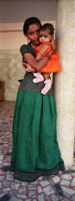
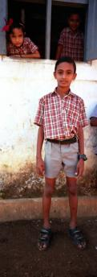

%1
Students marching with banners to celebrate the birthday of José Martí, Parque Central, Havana Vieja, Cuba  Click image to enlarge. |
|||
One of our stops on Inle Lake was at a village where silk weaving was done. Nearby that house these two children were playing with carpentry tools. The girl was unable to get the nail started into the wood, so I took a few whacks with the hammer to get the nail started. I also shot a very cute 33 second video of the two working with the tools. Olympus OMD EM-5, 25mm, 1/100@f4.5.  Click image to enlarge. |
|||
This vertical panoramic photograph was taken with a Hasselblad X-pan camera in the southern Indian state of Kerala, which has the highest literacy rate in India, as well as the largest percentage of Christians of any state of India. I asked our guide to ask this nun to stand in front of this altar of this church. Click image to enlarge. |
|||
A youth orchestra giving a concert in Regla on the east side of Havana harbor, Cuba  Click image to enlarge. |
|||
During the Paung Daw Oo Pagoda barge festival each fall, four gold leaf encrusted Buddhas are rowed around Inle lake on a ceremonial barge to a different village each day. Olympus OMD EM-5, 23mm, 1/200@f13  Click image to enlarge. |
|||
This young woman, wearing much jewelry, was waiting outside this church with her family. The church was not open, so it was unclear why they were there. At first I photographed her by herself, and later she cradled this child in her arms. This panoramic photograph was taken with a Hasselblad X-pan camera in Kanjoor, Karela, in south western India. The state of Kerala has many Christian congregations. Click image to enlarge. |
|||
Pond at Las Terrazas, an ecological preserve area in Pinar del Rio province, Cuba  Click image to enlarge. |
|||
These young monks have come down to the village from their monastery on the day that the Paung Daw Oo pagoda barge has brought the four gold leaf encrusted Buddha statues to this village. They are waiting at the bottom of the stairs while the senior monks eat lunch first on the second level. It was a very hot and humid day, so just coming from the slightly cooler second floor to the first floor caused condensation to form on the lens, but i liked the effect it created. Olympus OMD EM-5, 10mm, 1/160@f4.  Click image to enlarge. |
|||
During our boat journey through the backwaters of Kerala, India, we stopped one morning at a small village just before school started. These three children are awaiting the beginning of the school day. I especially like the two children enclosed by the window frames, creating the idea of three separate portraits within one picture. This vertical panoramic photograph was taken with a Hasselblad X-pan camera. Click image to enlarge. |
|||
Parque Central, captiol in right rear, Havana, Cuba  Click image to enlarge. |
|||